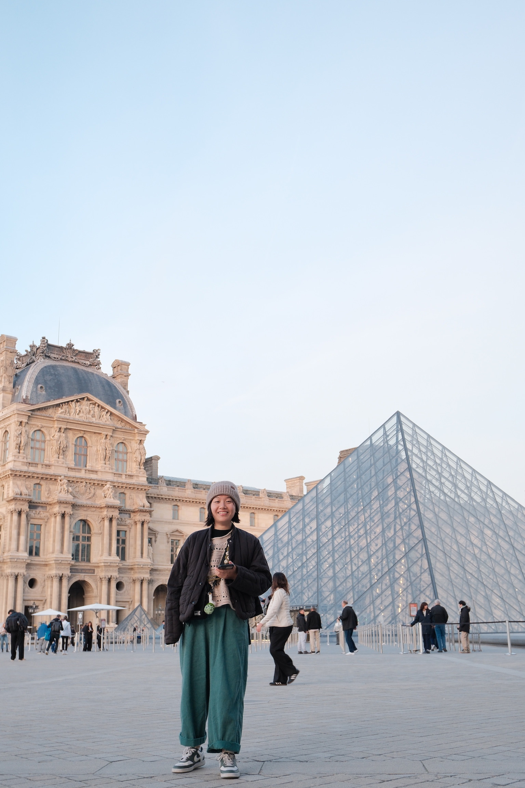

陳思婷
Landscape Design Portfolio
畢業於中原大學地景建築學系，有近6年工作經驗，具備景觀規劃、空間設計與環境整合能力。 於學習及專案實作過程中，累積基地分析、景觀配置、設計提案及圖面整合經驗。
重視空間與環境的互動關係，透過景觀設計回應場域特性與使用需求， 創造兼具美感、機能性及永續價值的空間體驗。
學/經歷
2020 – 2026
六國景觀設計有限公司
- 專案碧瑤新莊總部
- 專案新潤建設【新潤朗格】
- 專案泰隆鋼鐵【泰隆丰和】
- 專案崇利建設【崇利中山】
- 專案元大大同大樓都更案
- 景觀顧問台泥總部大樓【Tower Urban Oasis】
- 專案助理森鉅建設鳳鳴集合住宅案
2020
中原大學地景建築學系畢業
2018 – 2019
實習
- 實習生新竹光明新村測繪調查
- 實習生新富町市場活化（共感團隊）
專業技能
AutoCAD
SketchUp
Lumion
Photoshop
Illustrator
Indesign
Office
聯絡方式
Email：hlpss93189@gmail.com
Phone：0989-111-239